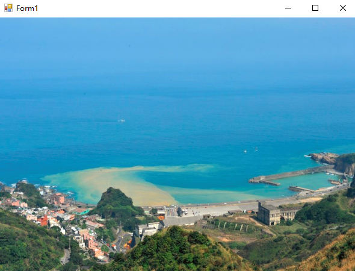
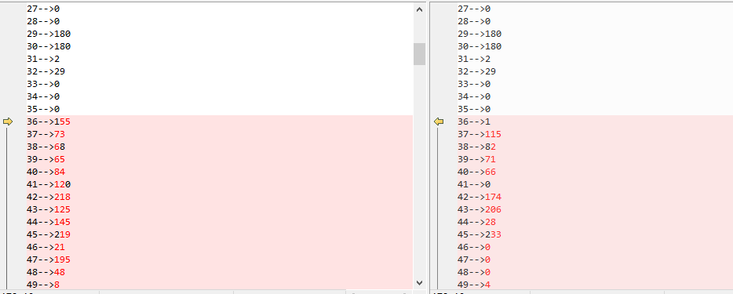

1. 手头上有一些图片文件，希望转换成 c# 中 Image对象，然后加以使用。
public static System.Drawing.Image FromFile (string filename);举个例子，建立一个winform工程，设置一下窗体的背景图片。
public partial class Form1 : Form
{
public Form1()
{
InitializeComponent();
Image image = Image.FromFile("Image.png");
this.BackgroundImage = image;
}
}运行效果：

二 图片存储与显示
1. Image ---> Byte数组
Image对象保存成byte数组，进而存储在文件或者数据库里。
using (var memoryStream = new MemoryStream())
{
var image = Image.FromFile("Image.png");
image.Save(memoryStream, ImageFormat.Png);
var byteArr = memoryStream.ToArray();
}
2. Byte数组 ---> Image
从文件或数据库里读出来的数据，也可以再转换成Image对象。
var image1 = new ImageConverter().ConvertFrom(byteArr);
this.BackgroundImage = (Image)image1;直接读取图片文件存储的二进制数据也可以转换成Image对象。
var originByte = File.ReadAllBytes("Image.png");
var image1 = new ImageConverter().ConvertFrom(originByte);
this.BackgroundImage = (Image)image1;
比较一下两者的二进制数据，还是有差异的。Image对象的数据量更大一些。但是经过我的测试。
两种数据都能被ImageConverter正确解析。
private void button1_Click(object sender, EventArgs e)
{
using (var memoryStream = new MemoryStream())
{
var image = Image.FromFile("Image.png");
image.Save(memoryStream, ImageFormat.Png);
var byteArr = memoryStream.ToArray();
var originByte = File.ReadAllBytes("Image.png");
WriteData("imageObj.txt", byteArr);
WriteData("originFile.txt", originByte);
}
}
private static void WriteData(string filename, byte[] target)
{
var list = new List<string>();
for (var i = 0; i < target.Length; i++)
{
list.Add($"{i}-->{target[i]}");
}
File.AppendAllLines(filename, list);
}
我换了一张很小的图片做比较。可以参考一下比较的片段，从第36个字节后不相同。
